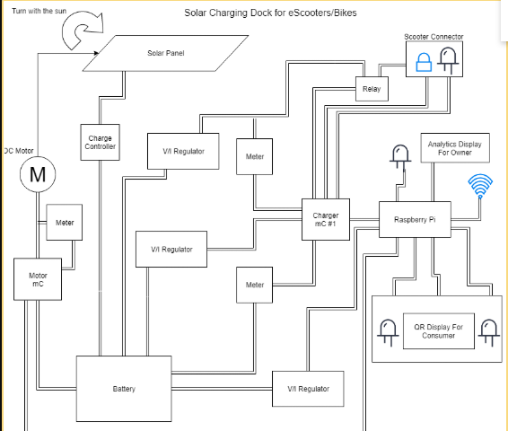

The objective of this project is to create a solar-powered charging dock for scooters on campus. This will be for both personal and enterprise scooters and potentially other chargable transportation vehicles, provided the charging type is available.
Industries have implemented their own scooters on various campuses to provide a marketable method of transportation. This is a good thing as it provides students a means to get around campus; however, these scooters are often left in inconvenient places, require people to fetch them and deliver them to designated spaces for people to find them, and they are often charged using a juicer's home power which uses non-renewable energy.
This project is not affiliated with Lime, but their scooters are expected to be a common target of this project.
The following solutions will be targets of this project:
Charge from solar grid, not local homes.
guarantees use of clean, renewable energy.
Provide certain points on campus where scooters can be parked and found.
The following are features that are being implemented into the charging dock:
Metering to track usage and performance of panels and chargers.
Mobile App/Website accessibility for the end user.
Design that matches the aesthetic of Georgia Southern University (white, blue, gold).
Locking mechanism to secure and charge scooters when not in use.
Gantt Chart
Solar Charging Station - Gantt Chart
This is the expected timeline the project divided by what portions will be worked on for what time interval, or Gantt Chart. This can be thought of as the deadlines for a project, portioned out as individual tasks that need to be completed. These deadlines are not expected to remain constant and are going to be updated as necessary.
Things that may cause a change in the timeline of completion:
Project design is overhauled to implement or abandon feature
Account management is abandoned for non-database alternatives
Power flow changes
Flow Chart

Solar Charging Station - Flow Chart
This is the flow chart for the project, a visual representation of how the charging station works. It shows pretty much everything from the collection of energy from the solar panel to power control via microcontroller. Whether or not the use of the Raspberry Pi will remain in the diagram is still up for debate and will depend on whether or not the project will be dealing with account management. If not, the flow chart will change.
As of recently, the concept of account management has been postponed and might not ever be implemented in the project as simpler alternatives, such as RFID scanners, are being investigated. These alternatives wouldn't require networking, or the hassles that normally come with account management.